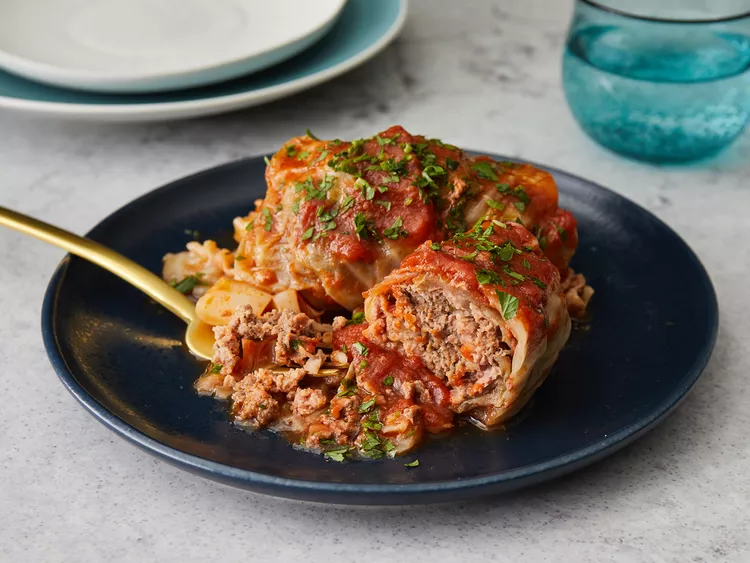

Main Page
Holubtsi (Stuffed Cabbage)

What is Holubtsi
This stuffed cabbage recipe, known as holubtsi in Ukraine. is made with
beef, pork, and rice encased
in cabbage and drizzled with a thin, sweet tomato sauce.
Holubtsi Ingredients
- 1 head cabbage, cored
- water to cover
- ¼ teaspoon salt
- 1 ½ pounds lean ground beef
- 1 ½ pounds ground pork
- 1 ½ cups cooked white rice
- 2 large eggs, slightly beaten
- ¼ cup finely chopped onion
- 2 tablespoons chopped fresh parsley
- ½ teaspoon garlic powder
- ½ teaspoon salt
- ½ teaspoon ground black pepper
- 1 (28 ounce) can tomato sauce
- ¼ cup white vinegar
- 2 ⅔ tablespoons white sugar
How to Make Holubtsi
-
Place cabbage in a stockpot; pour over enough water to cover. Add 1/4
teaspoon salt;
bring to a boil over medium-high heat. Turn cabbage every
2 to 3 minutes;
transfer any leaves that separate from cabbage into a
strainer to drain and cool.
Continue to boil until all the leaves have
cooked, about 15 minutes.
Reserve 1 1/2 cups of cabbage cooking water.
Cut out the tough,
thick center ribs of any large cabbage leaves with a
sharp knife.
- Preheat the oven to 350 degrees F (175 degrees C).
-
Mix ground beef, ground pork, cooked rice, eggs, onion, fresh parsley,
garlic powder,
salt, and pepper in a large bowl until combined. Lay 1
cabbage leaf on a flat surface;
place 1 heaping tablespoon of filling at
the base of a cabbage leaf.
Overlap with the bottom of the leaf; fold in
side edges and roll up.
- Repeat with remaining large cabbage leaves and filling.
-
Cut any leftover cabbage leaves into pieces and place in the bottom of a
roasting pan.
Layer stuffed cabbage rolls on top.
-
Combine tomato sauce, reserved cabbage water, white vinegar, and white
sugar in a bowl;
pour mixture over cabbage rolls. Cover roasting pan
with aluminum foil.
-
Bake in the preheated oven until filling is cooked through and sauce has
thickened,
about 2 1/2 hours. Baste stuffed cabbage rolls every hour.